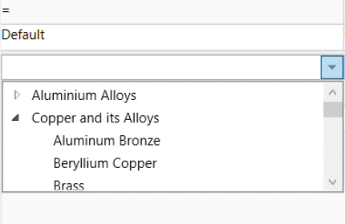
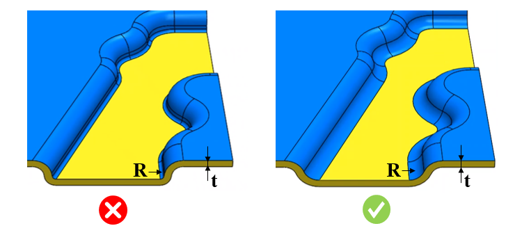

板金成形において、設計者は材料のしわを防ぐために最小曲げ半径を確保する必要があります。
板金成形プロセスでは、圧縮ひずみにより材料が押し合わされ、重なりが生じます。一般的なガイドとして、最小曲げ半径は少なくとも板厚と同等であるべきです。半径が推奨値より小さい場合、材料が軟らかい材料側へ流れ込み、硬い材料が破断する可能性があります。このような場合、局所的なくびれ（ネッキング）や破断が発生することもあります。
一般的な指針として、最小曲げ半径は少なくとも板厚と同等であるべきです。多くの焼鈍（アニール）された金属は、板厚と同等の半径まで曲げることができます。しかし、より軟らかい金属の中には、内側半径を板厚の1/2まで曲げられるものもあります。
短い曲げ半径長さは、最小曲げ半径を小さくします。
材料およびその硬さに基づき、「最小曲げ半径／板金板厚」の比に対して異なる値を推奨します。
曲げ半径／板厚 の値を適切に設定してください。
さらに、Map Material から取得される製造材料（fabrication materials）の一覧を使用して、特定材料に基づく比率を選択することもできます。ルールを実行する際は、入力選択（Input Selection）ダイアログボックスで、表示される製造材料の一覧から対象パーツの材料を選択してください。
選択した材料に対して「曲げ半径／板厚」比率が構成されていない場合は、既定値（Default value）がパーツ解析に使用されます。
ルールUIでは、材料の一覧は Materials Database から読み込まれます。ユーザーは材料とそれに紐づく値を構成できます。材料グループ内では、材料グレードはアルファベット順に並べ替えられます。材料グループが選択されている場合、DFMPro は材料グループ全体で一貫した比率を維持しながら解析を進めます。


ここでは、
t = 板金板厚
R = 曲げ半径